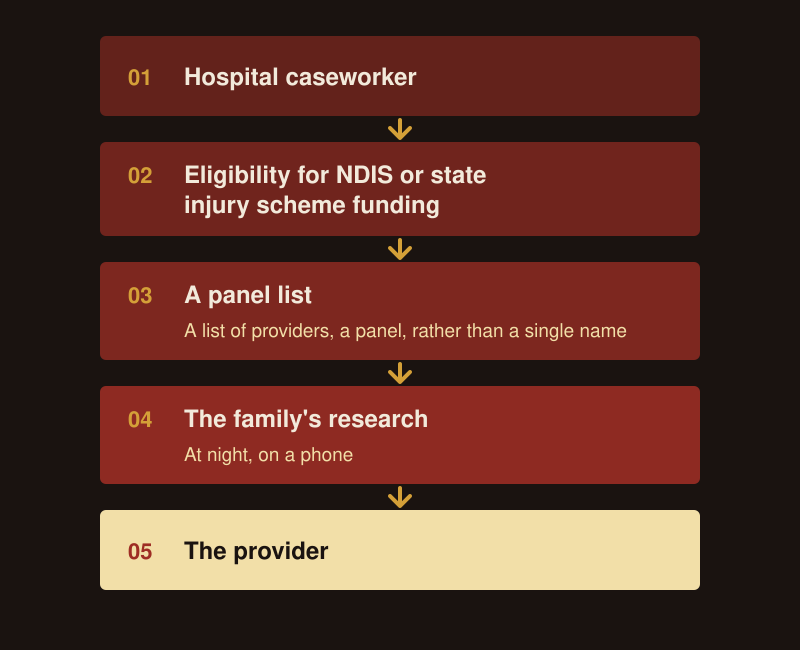
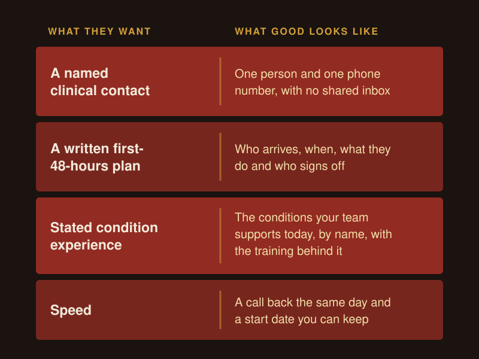
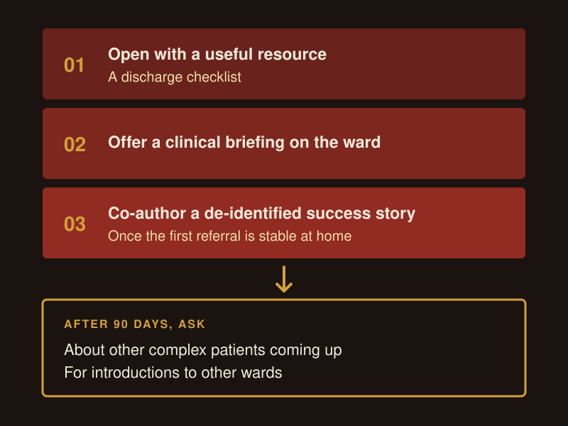
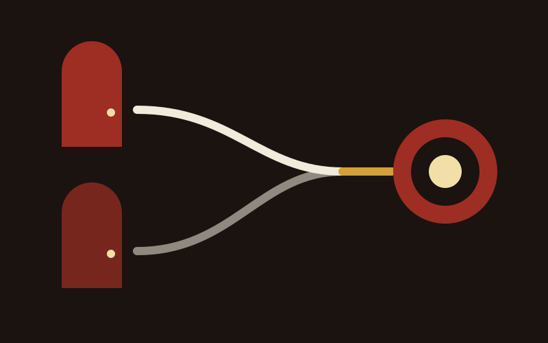
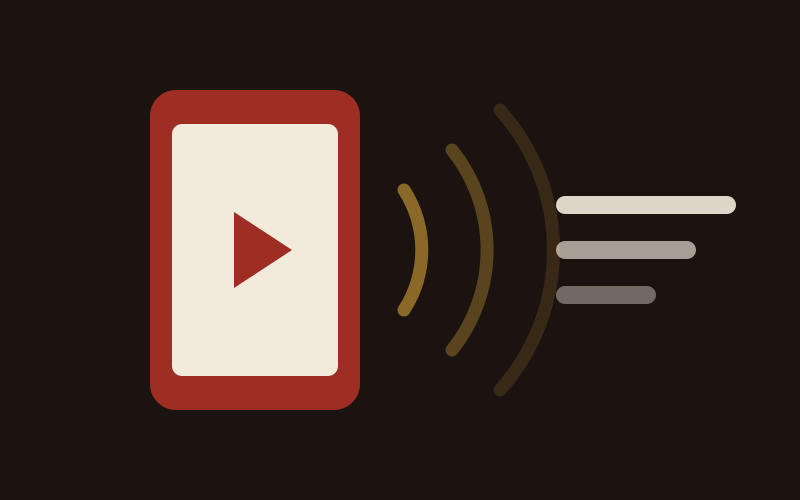

How to Find NDIS Clients: 2026 Guide
How to find NDIS clients through referrals, Google, AI search, social media, ads, email and a fast enquiry process. Every channel, in one 2026 guide.
Read more
To get NDIS clients from hospitals, build relationships with the people who plan each discharge: case managers, social workers, discharge planners, hospital liaisons, hospital OTs and case managers from injury schemes such as iCare and the TAC. Name their worries first, show them a written hospital-to-home plan with a named clinical contact, then ask, "Do you have anyone coming up to a discharge?"

This post sits under my guide on how to get NDIS clients. Hospitals are one door in, and for providers supporting people with complex needs it is often the biggest one.
People do. A question I put to a provider once was, "Are there still humans making decisions on behalf of other humans?" The answer is yes, and that changes how you market.
Picture someone who has just become quadriplegic. Their partner is sitting beside the bed. Over the next few weeks a stream of people comes through that door: case managers, OTs, insurance reps, social workers and other providers. Every one of them is a potential referrer.
The people I would map at each hospital near you:
Support coordinators come into the picture too, often once the person has a plan. They need a different approach, which I cover on the NDIS referrals page. This post stays with the hospital side.
Because real people make these calls, a brochure dropped at reception or a cold door-knock does very little. You need to be the provider a case manager thinks of when a discharge date lands.
After a serious injury or a long admission, a caseworker tells the family the person is eligible for NDIS funding or for a state injury scheme, such as iCare in NSW or the TAC in Victoria. The family then gets a list of providers, a panel, rather than a single name. Then they go home and research.
So two groups judge you, often in the same week:
| Who | What they do | What they need from you |
|---|---|---|
| The hospital team | Plans the discharge and puts you on the list | Confidence that care continues at the hospital's standard |
| The family | Works through the list at night, on a phone | A clear explanation of what happens next, in plain words |
Hospital-side referrers also tend to search first for a complex care provider and only later for housing. If your website and your pack lead with a property, you miss the earlier search.
One story I tell often: a woman whose husband is in a hospital bed opens a provider's website. Every line on it says "make a referral". She wants to know what happens to her husband when he comes home, and that site has lost her.
Give her a clear path. Put an "Information for families" button next to "Make a referral" on every page a hospital team might send someone to, and make the families page answer what she is asking: who comes to the house, what the first week looks like, who she calls when something goes wrong.

Discharge teams worry about readmissions and about care falling away once the person leaves the ward. Their name is on that discharge. If the person is back in emergency three weeks later, they carry it.
They are also under bed block pressure, with patients medically ready to leave and nowhere safe to send them.
As I put it to one provider, "A house doesn't matter." What a discharge team needs to see is clinical care continuing at the standard the hospital set. A lovely bedroom does not answer that.
So open every conversation, pack and email by naming their worries before you say a word about yourself. Two headings I give providers for this:
The first shows you understand their job. The second shows you have a plan for it. Set the first one up with brief context, "a common story we hear when discharges fail", then tell a real, de-identified example.
Discharge planners want four things from a provider, and they arrive ready to decide. Lead with proof and process.
| What they want | What good looks like |
|---|---|
| A named clinical contact | One person and one phone number, with no shared inbox |
| A written first-48-hours plan | Who arrives, when, what they do and who signs off |
| Stated condition experience | The conditions your team supports today, by name, with the training behind it |
| Speed | A call back the same day and a start date you can keep |
The best handover I have seen comes from a provider whose support workers learn the person's routine on the ward from the nurses before discharge. Support workers do not work with that person alone until clinical sign-off. Each person has one coordinator and one number, and the team reports any incident by phone within 24 hours. That is the standard a discharge planner is looking for. Write your own version down and put it in your pack.

A good hospital-to-home transition has a team that met the person on the ward, a written plan for the first 48 hours, the same named contact from the first call to the first month, and care at the level the hospital set.
Lead with that transition. Housing comes second. In an email to a provider I wrote, "Housing can be part of the solution, but doesn't need to be the headline." The goal of your first contact is to start a conversation with a hospital team, and a vacancy rarely does that on its own.
A good offer for a hospital team reads something like: if you have someone approaching discharge and want to know what their first four weeks at home need to look like, talk to us.
That gives the planner a reason to call today, before any housing question comes up.
Build them in three steps, give before you ask, and stay in touch between referrals. These are the three steps I use:
After 90 days, ask about other complex patients coming up and for introductions to other wards.
Alongside that, run a 2 to 4 week LinkedIn push. Search by job title for every discharge planner, social worker and hospital OT in your area and connect with a short note. Then post about life after hospital: what the first week at home looks like, what your team learns on the ward, what families ask. My LinkedIn for NDIS providers page covers the profile and the daily routine.
Hospital nurses and social workers often skip professional networking events. Cause-linked charity dinners reach them, so pick a cause close to their ward and turn up. Talk to them as a clinical peer, and keep the business card in your pocket.

Ask, "Do you have anyone coming up to a discharge?" It is easy to answer, it is about their job, and it fits a short call or a chat at the end of a ward visit.
Ask it when they are happiest with your service: after a smooth move home, or when a family has thanked the team. Give your own frontline staff the line too, because they are on the ward more than you are.
When you have room, make the offer specific. "We've got capacity" tells a planner nothing about who you are right for, and it brings referrals you then have to decline. "We've got a spot opening for someone with complex needs in [area]" tells them exactly who to think of.
Timing matters as well. Hospital and allied health teams need options for people approaching discharge, and the weeks before Christmas are when they need them most. Start those conversations in October and November.
Case managers from lifetime care, motor accident and workers compensation schemes need reports ready for scheme reviews and clear evidence of functional progress. If your reports arrive complete and on time, their paperwork drops, and you become the provider they want to keep using.
Show that in your pack: a sample report layout, how often you send it and what it measures.
Every state and territory runs its own schemes, so find out which ones cover the people you support:
| State or territory | Serious motor accident injuries | Work injuries |
|---|---|---|
| NSW | iCare Lifetime Care | iCare Workers Care for severe injuries, with the employer's insurer |
| VIC | TAC (Transport Accident Commission) | WorkSafe Victoria, through its agents |
| QLD | NIISQ Agency for serious injuries, CTP regulated by MAIC | WorkCover Queensland |
| SA | Lifetime Support Authority | ReturnToWorkSA |
| WA | Insurance Commission of WA, Catastrophic Injuries Support | Catastrophic Injuries Support for catastrophic injuries, approved insurers regulated by WorkCover WA |
| TAS | MAIB (Motor Accidents Insurance Board) | Licensed insurers regulated by WorkSafe Tasmania |
| ACT | Lifetime Care and Support Scheme, MAI insurers regulated by the MAI Commission | Lifetime Care and Support Scheme for catastrophic injuries, approved insurers regulated by WorkSafe ACT |
| NT | MAC scheme, run by TIO for the Motor Accidents (Compensation) Commission | Approved insurers regulated by NT WorkSafe |
| National | DVA for veterans | Comcare for Australian Government employees |
Each scheme sets its own rules for providers. Check the provider section of the scheme's own website before you approach its case managers.
If you run ads or a page aimed at scheme referrals, the page has to match the ad's promise from the first line. A case manager who clicks on "TAC case management support" and lands on a general services page leaves.
A hospital pack opens with their job, and how hard it is to move someone from hospital into the community. Use less text and more white space. A discharge planner reads it between patients.
What I put in one:
Keep about 70% of the pack shared across every referral audience and write the opening 30% for each one. The hospital version opens differently from the version for support coordinators or allied health.
Pick the 2 or 3 hospitals closest to the people you support. Map every case manager, social worker, discharge planner and hospital OT you can find. Write your first-48-hours plan and your families page this month, then start the 3-Step Connect.
Hospital referrals are one part of a wider growth plan. As a boutique NDIS marketing agency, I build that plan with providers across referrals, partnerships, search and social. My NDIS marketing page shows each part.
Contact the people who plan discharges: hospital case managers and case workers, social workers, discharge planners, hospital liaison officers and hospital OTs. For people injured on the road or at work, add the case managers from that state's injury scheme, such as iCare in NSW, the TAC in Victoria or NIISQ in Queensland. Search for them by job title on LinkedIn, connect with a short note, then offer something useful, such as a discharge checklist or a ward briefing.
No. Lead with how you handle the move from hospital to home: a named clinical contact, a written first-48-hours plan and the conditions your team supports. Hospital teams often look for a complex care provider first and housing later. Housing can be part of the answer, and it works better as the second thing they hear about.
It takes as long as the relationship takes to build. Start with a useful resource, then a ward briefing, then a co-authored story once the first referral is settled at home. At the 90-day mark, ask about other complex patients and for introductions to other wards. Keep in touch between referrals so you stay the provider they think of.
Only with written consent for that specific use from the person or their guardian, given before you share it. Remove anything that identifies them. A story that shows someone's disability or health status is sensitive information under the Privacy Act. Co-author it with the hospital team so they are comfortable with every line.
Yes. A hospital team may refer, but the family still checks your website, often at night on a phone. Put an "Information for families" button next to "Make a referral", and make that page explain who comes to the house, what the first week looks like and who to call when something goes wrong.

How to find NDIS clients through referrals, Google, AI search, social media, ads, email and a fast enquiry process. Every channel, in one 2026 guide.
Read more

How to grow an NDIS business across six areas: referrers, intake, participant and staff retention, capacity and owner time, with a number for each.
Read more

Which platforms reach families and which reach coordinators, what to post, and what needs written consent before it goes up.
Read more
Book a free growth audit and I'll show you where hospital referrals fit in your growth plan and what to fix first.